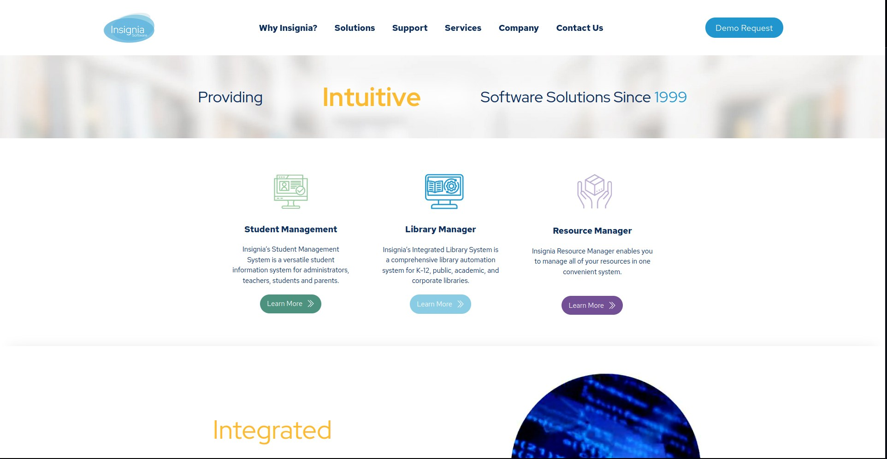
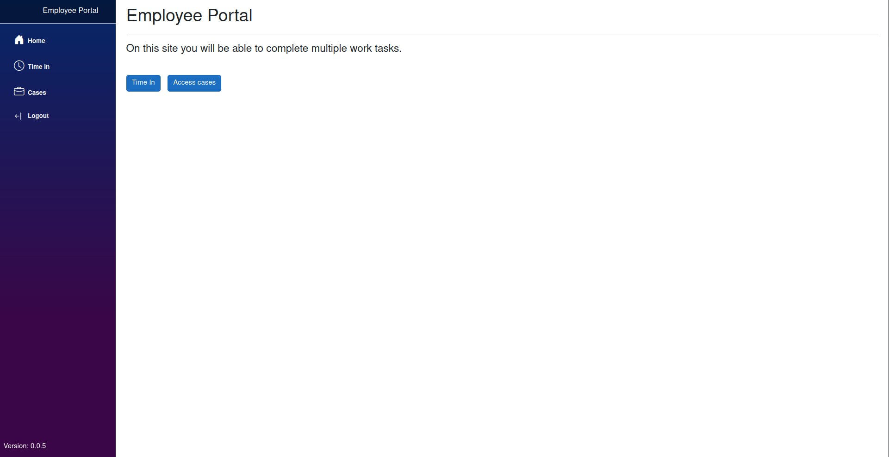

My Summer 2025 Work Term @ Insignia Software Inc.
Abstract
Welcome to my Summer 2025 work term report. In reading this, I hope you learn more about my time at Insignia Software where I worked as a Junior Software Developer where I mostly focused on full-stack development.
Information about the Employer
Insignia Software Inc. is a software company that specializes in library management software. It is based in Edmonton, Alberta with employees and customers across the globe.
The company’s main product is their ILS (integrated library system) solution. This allows an organization with multiple libraries to synchronize and coordinate item (books, cds, etc) and patron (students, librarians, etc) information.
Insignia is a market leader in their industry and works with many large organizations including the TDSB, TCDSB, and Wellington County.
Goals
I had three learning goals this work term:
- Improve my ability to communicate technical information succinctly and simply to non-technical employees.
- Improve my ability to teach technical concepts to new developers in a simple and easy to grasp way.
- Improve my ability to address and decipher issues communicated to me by non-technical stakeholders.
Because this is my third work term at this company I am very familiar with their tech stack and day-to-day workflow. In my first two work terms my goals were more closely aligned to my daily programming related tasks. Because I have already achieved those goals, this semester I chose to do something new.
I reflected upon the types of interactions I was having at work and who they were with. I realized that while the technical aspect of my job is important, a large part of my job was to communicate technical ideas to the stakeholders involved in a project. Upon reflection, I realized how crucial it was for me to improve my communication towards and with these people. In fact, in some scenarios I noticed confusion often arose when I mentioned technical concepts without properly considering how best to communicate these concepts. I also communicate with developers at work and I found that I would be better off improving my ability to communicate technical concepts to them as well.
As I mentioned, I believe improving my overall communication skills and training myself to learn the most efficient method of communication to different types of stakeholders will be incredibly beneficial in my career. From avoiding confusion, saving time, and making sure the other person completely understands me, there will be numerous benefits.
Two technologies that I did want to learn, were SQL stored procedures and SSO authentication in ASP.NET Core. SQL SPs are used very frequently in my company and I wanted to learn how to use them to be able to better do my job and rely less on other developers to fix small issues. I wanted to learn SSO because I have never developed an application that had SSO integrated. It was very interesting to learn because it allowed me to easily make an application every employee in the company could use.
Reflections
Goal 1: Over the last 4 months, I believe I have improved my ability to communicate technical concepts to non-technical employees. While I do think there is still a long way to go, I have noticed myself utilizing my action plan resulting in the people I’m talking to having a clearer understanding.
Goal 2: While I was not able to teach as much as I would have liked this work term, I was able to impart a significant amount of knowledge to a new team member. I felt that I was able to effectively transfer much of my knowledge unto them using the methods I have described above. I hope to continue improving this as I believe it will be a crucial skill as I progress through my career. Training new employees is incredibly important.
Goal 3: Over this work term I feel that I was able to be successful in completing this goal. Setting and following through with this goal has allowed me to enhance my ability to pinpoint and properly diagnose problems that are faced by my non-technical coworkers. Like my other goals, I think this is one that is very important to keep improving as I continue in my career. Especially as I move up in companies, I expect to be communicating more and more with non-technical people. Therefore, I expect them to simply come to me with an issue to fix while they simply expect a time and cost estimate from me. I think being able to effectively navigate this plane will prove to be very important in my career.
Job Description
This summer, I spent 75% of my time working on projects from my previous work terms and around 25% of my time on new projects.
Previous Projects

Insignia Website Redesign
I created the new version of the company’s website in my previous work
terms. This summer, I was tasked with creating some new pages and
modifying the design and functionality here and there. Nothing too
complicated, but I did spend a decent amount of time on this project.
NCIP
I started this project when I initially started at Insignia in the
Summer of 2024. It has been a long journey to get this project to where
it is today. Initially, there was a lot of confusion surrounding the
NCIP protocol and there was a lot of discussion around how we should
support it. We were able to solve this issues in my first work term and
in my second work term (Fall 2024) I got started writing the actual code
to implement this protocol. I had to return back to school before being
able to finish the project however.
This summer, I was able to put the finish touches on the code and start testing with one of our vendors that supported this protocol. This process was quite tedious and required a lot of back and forth communication; communication that was likely not entirely necessary. This type of communication is the reason I chose the learning goals I chose, I wanted to efficiently minimize the amount of emails and meetings necessary when working on interdisciplinary teams.
New Projects

Employee Portal
I was tasked with creating a portal for employees to time in and out
each day and for them to be able to interact with customer information.
This project was quite simple, but it provided me an opportunity to
learn more about SQL and SQL Stored Procedures which I think will be
very beneficial in the future. Because of the simplicity of this
project, I spent a lot more time thinking about the requirements given
to me and the best way for me to fulfill them.
While I was coding for the vast majority of this work term, in hindsight it was a lot less about coding and more about communication and project management. I suspect as I progress in my career, especially if I’m working for businesses with less complicated software demands, the main part of my job will be bridging the gap between technical and non-technical people and supplying deliverables when they are due.
I believe the skills I learned in courses like CIS*3750 and CIS*3760 will prove to be very important in professional working environments. I hope to further improve my people skills throughout my career such that I am able to effectively collaborate with large teams.
Conclusion
In conclusion, my Summer 2025 work term at Insignia Software was a period of significant professional growth, extending beyond technical programming tasks. While I refined my full-stack development skills through my work on the company website redesign, the NCIP protocol implementation, and the new Employee Portal, the most impactful lessons were in communication. This co-op term reinforced the understanding that the core of a software developer's role is often to act as a bridge between technical and non-technical teams. By focusing on my goals to simplify complex information, I enhanced my ability to communicate with and decipher issues from non-technical stakeholders, leading to more efficient project workflows. The experience of mentoring a new developer and learning new technologies like SQL stored procedures and SSO authentication further rounded out my skillset. I leave this work term with a deeper appreciation for the importance of communication and project management in software development, skills that will be invaluable as I progress in my career.
Acknowledgements
- Humayon Butt The President of Insignia Software Inc. who hired me and has taken an active role in mentoring me.
- The SOCS co-op coordinators at the University of Guelph.